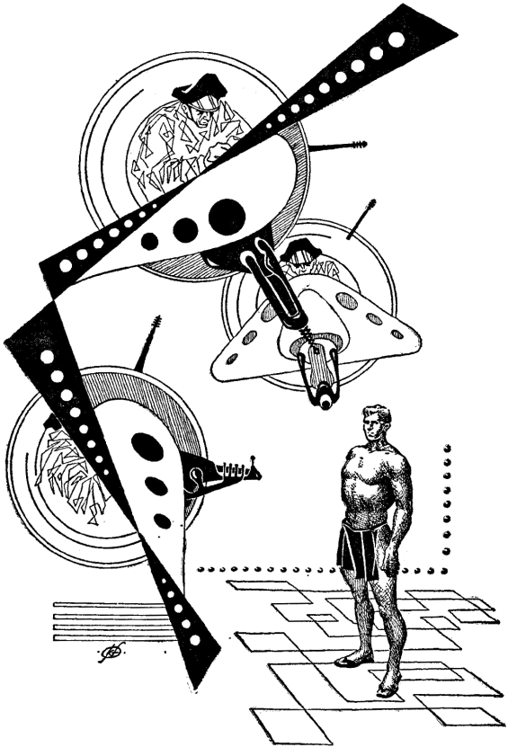

The Golden Man 黄金人
The powers of earth had finally exterminated the last of the horrible tribes of mutant freaks spawned by atomic war. Menace to homo sapien supremacy was about ended — but not quite. For out of the countryside came a great golden, godlike youth whose extraordinary mutant powers, combining the world's oldest and newest methods of survival, promised a new and superior type of mankind…
地球的力量终于消灭了原子战争所催生的最后一批可怕的变异怪物部落。对智人霸权的威胁即将结束——但还没有完全结束。因为从乡村走出了一位伟大的金色、神一般的年轻人，他非凡的变异力量，结合了世界上最古老和最新的生存方法，预示着一种新的、更优越的人类……
"Is it always hot like this?" the salesman demanded. He addressed everybody at the lunch counter and in the shabby booths against the wall. A middle-aged fat man with a good-natured smile, rumpled gray suit, sweat-stained white shirt, a drooping bowtie, and a Panama hat.
“总是这么热吗？” 推销员问道。他对在午餐柜台和靠墙的破旧隔间里的所有人讲话。
"Only in the summer," the waitress answered.
“只有夏天。”女服务员回答道。
None of the others stirred. The teenage boy and girl in one of the booths, eyes fixed intently on each other. Two workmen, sleeves rolled up, arms dark and hairy, eating bean soup and rolls. A lean, weathered farmer. An elderly businessman in a blue-serge suit, vest and pocket watch. A dark rat-faced cab driver drinking coffee. A tired woman who had come in to get off her feet and put down her bundles.
其他人都没有动静。其中一个摊位上的男孩和女孩，目光专注地凝视着对方。两个工人挽着袖子，胳膊黑黑的，毛茸茸的，吃着豆汤和面包卷。一个瘦弱、饱经风霜的农民。一位身穿蓝色哔叽西装、背心和怀表的年长商人。一个皮肤黝黑、长着老鼠脸的出租车司机正在喝咖啡。一个疲惫的女人进来，站起来放下包袱。
The salesman got out a package of cigarettes. He glanced curiously around the dingy cafe, lit up, leaned his arms on the counter, and said to the man next to him:
推销员拿出一包香烟。他好奇地扫视了一下昏暗的咖啡馆，点了烟，双臂撑在柜台上，对旁边的男人说道：
"What's the name of this town?"
“这个镇的名字是什么？”
The man grunted. "Walnut Creek."
男人哼了一声。 “核桃溪。”
The salesman sipped at his coke for a while, cigarette held loosely between plump white fingers. Presently he reached in his coat and brought out a leather wallet. For a long time he leafed thoughtfully through cards and papers, bits of notes, ticket stubs, endless odds and ends, soiled fragments — and finally a photograph.
推销员喝了一会儿可乐，白皙的手指松松地夹着香烟。不久，他把手伸进外套，拿出一个皮钱包。很长一段时间，他若有所思地翻找于卡片和纸张、零碎的笔记、票根、无穷无尽的零碎物品、脏兮兮的碎片之中——最后翻出一张照片。
He grinned at the photograph, and then began to chuckle, a low moist rasp. "Look at this," he said to the man beside him.
他对着照片笑了笑，然后开始咯咯地笑，声音低沉、湿润。“看看这个，”他对旁边的男人说道。
The man went on reading his newspaper.
那人继续看报纸。
"Hey, look at this." The salesman nudged him with his elbow and pushed the photograph at him. "How's that strike you?"
“嘿，看看这个。”推销员用手肘碰了碰他，然后把照片推给了他。“你觉得怎么样？”
Annoyed, the man glanced briefly at the the photograph. It showed a nude woman, from the waist up. Perhaps thirty-five years old. Face turned away. Body white and flabby. With eight breasts.
男人恼怒地瞥了一眼照片。它显示了一个从腰部以上裸体的女人。也许三十五岁。脸转过去。身体白色且松弛。有八个乳房。
"Ever seen anything like that?" the salesman chuckled, his little red eyes dancing. His face broke into lewd smiles and again he nudged the man.
“见过像这样的吗？”推销员咯咯笑起来，红红的小眼睛在跳动。他的脸上绽放出淫荡的笑容，再次用肘碰了碰那个男人。
"I've seen that before." Disgusted, the man resumed reading his newspaper.
“我以前见过。”男人感到厌恶，又继续看报纸。
The salesman noticed the lean old farmer was looking at the picture. He passed it genially over to him. "How's that strike you, pop? Pretty good stuff, eh?"
推销员注意到那个精瘦的老农正在看照片。他和蔼地把它递给了他。 “你觉得怎么样，老哥？相当不错的东西，嗯？”
The farmer examined the picture solemnly. He turned it over, studied the creased back, took a second look at the front, then tossed it to the salesman. It slid from the counter, turned over a couple of times, and fell to the floor face up.
农夫严肃地审视着这张照片。他把它翻过来，研究了背面的折痕，又看了一眼正面，然后把它扔给了推销员。照片从柜台上滑下来，翻转了几次，然后面朝上掉到了地板上。
The salesman picked it up and brushed it off. Carefully, almost tenderly, he restored it to his wallet. The waitress' eyes flickered as she caught a glimpse of it.
推销员把它捡起来，然后擦了擦。他小心翼翼地、近乎温柔地把它放回钱包里。女服务员看到这一幕，眼神闪烁。
"Damn nice," the salesman observed, with a wink. "Wouldn't you say so?"
“该死的好，”推销员眨了眨眼睛观察道。“你不觉得吗？”
The waitress shrugged indifferently. "I don't know. I saw a lot of them around Denver. A whole colony."
女服务员无所谓地耸耸肩。“我不知道。我在丹佛周围看到了很多它们。一整个殖民地那么多。”
"That's where this was taken. Denver DCA Camp."
“那里就是这张照片的拍摄地。丹佛 DCA 营。”
"Any still alive?" the farmer asked.
“还有活着的吗？” 农夫问。
The salesman laughed harshly. "You kidding?" He made a short, sharp swipe with his hand. "Not any more."
推销员使劲地笑道。 “你开玩笑吧？” 他用手轻轻一挥。 “一个也没有。”
They were all listening. Even the high school kids in the booth had stopped holding hands and were sitting up straight, eyes wide with fascination.
他们都在听。 就连摊位上的高中生也不再牵着手，坐直了身子，睁大了眼睛，满脸着迷。
"Saw a funny kind down near San Diego," the farmer said. "Last year, some time. Had wings like a bat. Skin, not feathers. Skin and bone wings."
“在圣地亚哥附近看到了一种有趣的，”农民说。 “去年的某个时候。有像蝙蝠一样的翅膀。只有皮肤，没有羽毛。皮肤和骨翅膀。”
The rat-eyed taxi driver chimed in. "That's nothing. There was a two-headed one in Detroit. I saw it on exhibit."
老鼠眼的出租车司机插话道：“这没什么。底特律有一个双头的。我在展览中看到过它。”
"Was it alive?" the waitress asked.
“它还活着吗？” 女服务员问道。
"No. They'd already euthed it."
“不。他们已经把它安乐死了。”
"In sociology," the high school boy spoke up, "we saw tapes of a whole lot of them. The winged kind from down south, the big-headed one they found in Germany, an awful-looking one with sort of cones, like an insect. And —"
“在社会学的课上，”高中生开口说道,“我们看到了很多关于它们的录像带。来自南方的带翅膀的，他们在德国发现的大头的，一种长相可怕的，带有锥体，像昆虫一样。而且 ——”
"The worst of all," the elderly businessman stated, "are those English ones. That hid out in the coal mines. The ones they didn't find until last year." He shook his head.
“最糟糕的是，”年长的商人表示，“是那些来自英国的。藏在煤矿里。直到去年他们才找到的。”他摇了摇头。
"Forty years, down there in the mines, breeding and developing. Almost a hundred of them. Survivors from a group that went underground during the War."
“四十年来，在矿井里，繁殖和发育。几乎有一百个。战争期间一群进入地下的幸存者。”
"They just found a new kind in Sweden," the waitress said. "I was reading about it. Controls minds at a distance, they said. Only a couple of them. The DCA got there plenty fast."
“他们刚刚在瑞典发现了一个新品种，”女服务员说。 “我读到过相关报道。他们说，可以远距离控制思想，只有几个。DCA 很快就到达了那里。”
"That's a variation of the New Zealand type," one of the workmen said. "It read minds."
“这是新西兰类型的变种，”一名工人说。 “它会读心术。”
"Reading and controlling are two different things," the businessman said. "When I hear something like that I'm plenty glad there's the DCA."
“读心术和思想控制是两件不同的事情，”这位商人说。 “当我听到这样的事情时，我很高兴有 DCA。”
"There was a type they found right after the War," the farmer said. "In Siberia. Had the ability to control objects. Psychokinetic ability. The Soviet DCA got it right away. Nobody remembers that any more."
“他们在战后就发现了一种类型，”农民说。 “在西伯利亚。有控制物体的能力。念动力能力。苏联DCA马上就得到了。再也没有人记得了。”
"I remember that," the businessman said. "I was just a kid, then. I remember because that was the first deeve I ever heard of. My father called me into the living room and told me and my brothers and sisters. We were still building the house. That was in the days when the DCA inspected everyone and stamped their arms." He held up his thin, gnarled wrist. "I was stamped there, sixty years ago."
“我记得，”商人说。 “那时我还只是个孩子。我记得因为那是我听说过的第一个deeve（变种人称呼）。我父亲把我叫进客厅，告诉我和我的兄弟姐妹。我们还在盖房子。那是在 那些日子里，DCA 检查了每个人，并在他们的手臂上盖了章。” 他举起那只瘦弱、多节的手腕。 “六十年前，我就在那儿留下了印记。”
"Now they just have the birth inspection," the waitress said. She shivered. "There was one in San Francisco this month. First in over a year. They thought it was over, around here."
“现在他们只做产检了，”女服务员说。 她颤抖着。 “这个月在旧金山发生了一次。这是一年多以来的第一次。他们还以为这附近的情况已经结束了。”
"It's been dwindling," the taxi driver said. "Frisco wasn't too bad hit. Not like some. Not like Detroit."
“数量正在减少，”出租车司机说。 “弗里斯科（丹佛附近的城市）的打击并不算太严重。不像某些地方。不像底特律。”
"They still get ten or fifteen a year in Detroit," the high school boy said. "All around there. Lots of pools still left. People go into them, in spite of the robot signs."
“在底特律，他们每年仍然有十到十五个，”高中生说。 “周围都有。还有很多池子剩下。尽管有机器人标志，人们还是进去了。”
"What kind was this one?" the salesman asked. "The one they found in San Francisco."
“这是什么类型的？” 推销员问道。 “他们在旧金山发现的那个。”
The waitress gestured. "Common type. The kind with no toes. Bent-over. Big eyes."
女服务员做了个手势。 “普通型，没有脚趾的那种，弯着腰，眼睛很大。”
"The nocturnal type," the salesman said.
“夜行型，”推销员说。
"The mother had hid it. They say it was three years old. She got the doctor to forge the DCA chit. Old friend of the family."
“母亲把它藏起来了。他们说它已经三岁了。她让医生伪造了 DCA 凭证。通过家里的老朋友。”
The salesman had finished his coke. He sat playing idly with his cigarettes, listening to the hum of talk he had set into motion. The high school boy was leaning excitedly toward the girl across from him, impressing her with his fund of knowledge. The lean farmer and the businessman were huddled together, remembering the old days, the last years of the War, before the first Ten-Year Reconstruction Plan. The taxi driver and the two workmen were swapping yarns about their own experiences.
推销员已经喝完了他的可乐。 他无所事事地坐着玩着香烟，听着他发起的谈话的嗡嗡声。 高中男生兴奋地靠向对面的女孩，他丰富的知识给她留下了深刻的印象。 瘦弱的农民和商人挤在一起，回忆着过去的日子，回忆着战争的最后几年，也就是第一个十年重建计划之前的日子。 出租车司机和两名工人正在交换各自的经历。
The salesman caught the waitress's attention. "I guess," he said thoughtfully, "that one in Frisco caused quite a stir. Something like that happening so close."
推销员引起了女服务员的注意。 “我想，”他若有所思地说，“弗里斯科的那件事引起了不小的轰动。类似的事情就发生在这么近的地方。”
"Yeah," the waitress murmured.
“是啊，”女服务员低声说道。
"This side of the Bay wasn't really hit," the salesman continued. "You never get any of them over here."
“海湾的这一边并没有受到真正的打击，”推销员继续说道。 “你永远不会在这里见到他们。”
"No." The waitress moved abruptly. "None in this area. Ever." She scooped up dirty dishes from the counter and headed toward the back.
“不。” 女服务员突然动了动。 “这个地区没有。从来没有。” 她从柜台上舀起脏盘子，朝后面走去。
"Never?" the salesman asked, surprised. "You've never had any deeves on this side of the Bay?"
“从来没有？” 推销员惊讶地问道。 “海湾这边从来没有过任何deeve吗？”
"No. None." She disappeared into the back, where the fry cook stood by his burners, white apron and tattooed wrists. Her voice was a little too loud, a little too harsh and strained. It made the farmer pause suddenly and glance up.
“没有。一个也没有。” 她到了后面去了，油炸厨师站在他的炉子旁，穿着白色围裙，手腕上有纹身。 她的声音有点太大了，有点太刺耳和紧张。 这让农夫突然停了下来，抬起头来。
Silence dropped like a curtain. All sound cut off instantly. They were all gazing down at their food, suddenly tense and ominous.
寂静如幕布般落下。 所有声音瞬间断绝。 他们都低头看着自己的食物，突然变得紧张而不祥。
"None around here," the taxi driver said, loudly and clearly, to no one in particular. "None ever."
“这附近一个也没有。”出租车司机大声而清晰地说道，没有针对任何人。 “从来没有。”
"Sure," the salesman agreed genially. "I was only —"
“当然。”推销员和蔼地答应道。 “我只是——”
"Make sure you get that straight," one of the workmen said.
“你一定要弄清楚，”其中一名工人说。
The salesman blinked. "Sure, buddy. Sure." He fumbled nervously in his pocket. A quarter and a dime jangled to the floor and he hurriedly scooped them up. "No offense."
推销员眨了眨眼睛。 “当然，伙计。当然。” 他紧张地在口袋里摸索。 一枚25美分和一毛钱叮当作响地掉在地上，他赶紧把它们捡起来。 “没有冒犯的意思。”
For a moment there was silence. Then the high school boy spoke up, aware for the first time that nobody was saying anything. "I heard something," he began eagerly, voice full of importance. "Somebody said they saw something up by the Johnson farm that looked like it was one of those —"
一时间寂静无声。 然后高中男生开口了，他第一次意识到没有人在说话。 “我听到了一些声音，”他急切地说道，声音充满了重要性。 “有人说他们在约翰逊农场附近看到了一些东西，看起来就像是其中之一——”
"Shut up," the businessman said, without turning his head.
“闭嘴，”商人头也不回地说道。
Scarlet-faced, the boy sagged in his seat. His voice wavered and broke off. He peered hastily down at his hands and swallowed unhappily.
男孩脸色猩红，瘫坐在座位上。 他的声音颤抖着，然后就断了。 他急忙低头看了看自己的双手，不高兴地咽了口口水。
The salesman paid the waitress for his coke. "What's the quickest road to Frisco?" he began. But the waitress had already turned her back.
推销员付给女服务员买可乐的钱。 “去弗里斯科最快的路是什么？” 他开始说。 但女服务员已经转过身去。
The people at the counter were immersed in their food. None of them looked up. They ate in frozen silence. Hostile, unfriendly faces, intent on their food.
柜台前的人们都沉浸在食物中。 他们都没有抬头。 他们在冰冷的沉默中吃着饭。 充满敌意、不友好的面孔，专注于他们的食物。
The salesman picked up his bulging briefcase, pushed open the screen door, and stepped out into the blazing sunlight. He moved toward his battered 1978 Buick, parked a few meters up. A blue-shirted traffic cop was standing in the shade of an awning, talking languidly to a young woman in a yellow silk dress that clung moistly to her slim body.
推销员拎起鼓鼓囊囊的公文包，推开门帘，走进了炽热的阳光下。 他朝停在几米外的那辆破旧的 1978 年别克车走去。 一名身穿蓝衬衫的交警站在遮阳篷的阴影下，正与一位穿着黄色丝质连衣裙的年轻女子慵懒地交谈着，连衣裙湿漉漉地贴在她的苗条身材上。
The salesman paused a moment before he got into his car. He waved his hand and hailed the policeman. "Say, you know this town pretty good?"
推销员在上车前停顿了一下。 他挥挥手，向警察打招呼。 “话说，你对这个小镇很了解吧？”
The policeman eyed the salesman's rumpled gray suit, bowtie, his sweat-stained shirt. The out-of-state license. "What do you want?"
警察看着推销员皱巴巴的灰色西装、领结和汗渍斑斑的衬衫。 州外执照（意思是外州人）。 “你想干什么？”
"I'm looking for the Johnson farm," the salesman said. "Here to see him about some litigation." He moved toward the policeman, a small white card between his fingers.
“我正在寻找约翰逊的农场，”推销员说。 “来见他，是为了一些诉讼。” 他走向警察，手指间夹着一张白色的小卡片。
"I'm his attorney — from the New York Guild. Can you tell me how to get out there? I haven't been through here in a couple of years."
“我是他的律师——来自纽约行会。你能告诉我怎么出去吗？我已经好几年没来过这里了。”